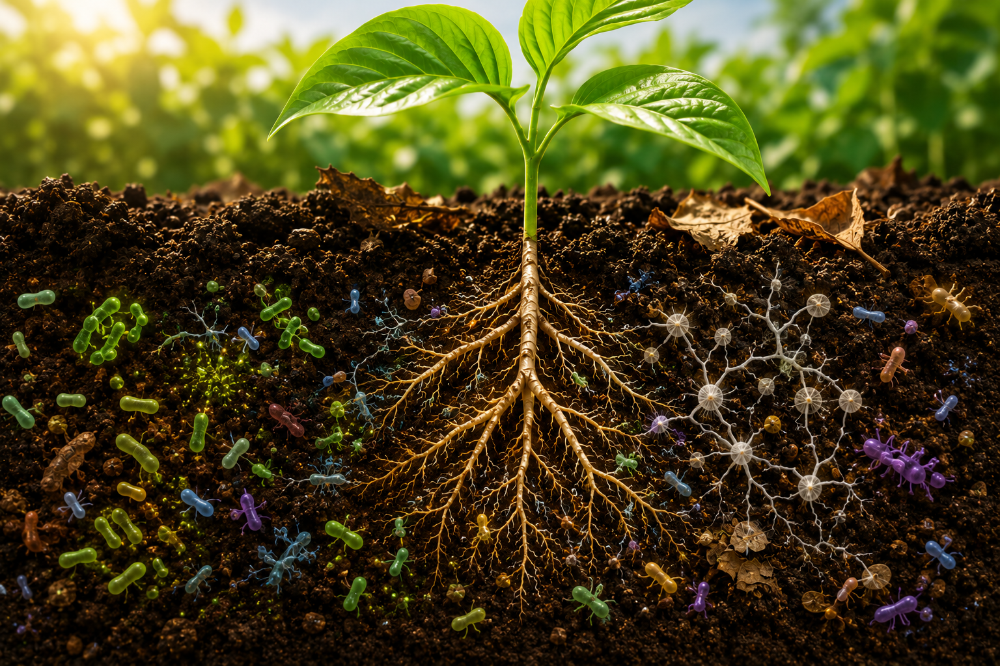
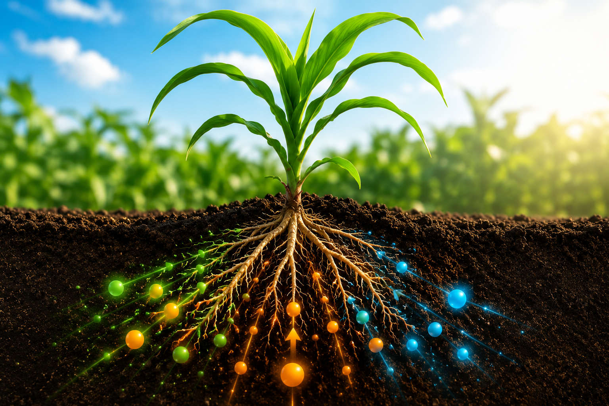

Como alimentar o solo sem esgotar o futuro do nosso planeta?
A adubação move a agricultura mundial, mas o equilíbrio entre o laboratório quimico e os ciclos orgânicos da natureza esconde o maior desafio da sustentabilidade moderna.

Nutrição Orgânica: Vida microbiana ativa no solo.

Nutrição Mineral: Alta precisão e rápida absorção de NPK.
O Cenário Atual do Solo
Antes de agir, precisamos investigar: quais são as reais diferenças na forma como o solo processa esses insumos?
Laboratório Virtual: O Simulador de Ecossistemas
O que acontece com a água, com os microrganismos e com a produtividade se você exagerar no fertilizante químico? E se usar apenas adubo orgânico a curto prazo? Teste suas decisões agronômicas!
Pronto para iniciar
Selecione uma estratégia de adubação e clique no botão para ver os impactos ecológicos simulados em tempo real.
Os Desafios sob Múltiplas Perspectivas
Impacto Ambiental e Biodiversidade
A adubação química em excesso pode causar a **eutrofização de rios e lençóis freáticos**, provocando a morte de ecossistemas aquáticos devido ao lixiviamento de nitratos. Já o adubo orgânico reconstrói a **microfauna do solo** (bactérias benéficas, fungos micorrízicos e minhocas), fixando carbono e mitigando as mudanças climáticas.
Viabilidade Econômica e Produtividade
Fertilizantes químicos oferecem **retorno rápido de produtividade** e alta concentração de nutrientes por quilo, sendo ideais para culturas de larga escala com resposta imediata do mercado. O manejo orgânico exige maior volume de material e transporte dispendioso, mas gera **resiliência financeira a longo prazo**, reduzindo a dependência de insumos importados cotados em dólar.
Inovação Tecnológica no Campo
A tecnologia moderna une os dois mundos através de **fertilizantes organominerais**, bioinsumos customizados, e agricultura de precisão controlada por IA e sensores foliares. Isso permite mapear exatamente as deficiências de NPK do solo e aplicar doses milimétricas na planta, evitando desperdícios e contaminações.
Estudos de Caso Reais
Materiais Complementares
Biblioteca Digital do Aluno
-
Podcast: Microfauna e Vida Subterrânea
Entrevista com microbiologistas sobre o poder regenerativo do húmus.
-
Manual Prático de Compostagem Caseira
Guia passo a passo focado em hortas escolares e agricultura urbana.
Estratégias para uma Agricultura Sustentável
A resposta não está em escolher um lado, mas em aplicar metodologias inteligentes de manejo integrado.
Perguntas Frequentes
Não. Os fertilizantes químicos fornecem minerais puros essenciais (como Nitrogênio, Fósforo e Potássio) idênticos aos minerais que a planta consome na natureza. O problema reside no **excesso de aplicação**, que saliniza o solo, mata microrganismos benéficos e causa desequilíbrios ecológicos.
Porque os nutrientes do adubo orgânico estão presos em moléculas complexas. Os **microrganismos do solo precisam digerir** essa matéria orgânica primeiro (mineralização) para liberar os nutrientes de forma lenta e gradual, melhorando a estrutura física do solo ao longo do tempo.
Qual pegada ecológica você quer deixar na terra?
Agora que você explorou o funcionamento físico, químico e biológico dos fertilizantes, pense na sua realidade: Como as escolhas de consumo de alimentos na sua casa influenciam as práticas agrícolas do campo?
Fazer um Novo Teste no Simulador